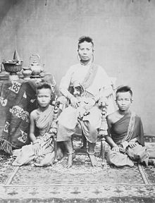
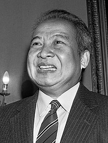
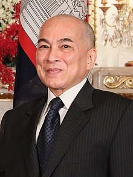

Ang Mey[2] (Khmer: អង្គម៉ី [ʔɑŋ məj]; 1815 – December 1874) was a monarch of Cambodia.[3] Her official title was Samdech Preah Mahā Rājinī Ang Mey. She was one of few female rulers in Cambodia's history, and the first one since Queen Tey. Installed on the Cambodian throne by the Vietnamese, her reign was dominated by the Siamese-Vietnamese War (1841–1845).
Queen Ang Mey, also known by her Vietnamese title Ngọc-Vân-công-chúa (Princess Ngọc Vân), was proclaimed monarch on the death of her father by the Vietnamese faction at court with the title of "Chân Lạp quận chúa" (Duchess of Cambodia) in January 1835, then deposed in August 1840 with the demoted title of "Mỹ-Lâm-quận-chúa" (Duchess of Mỹ Lâm). She was reinstated in 1844, and again removed from the throne by the Vietnamese and taken to Huế with her sisters in 1845.
Biography
Early life
Ang Mey was born in 1815 as the second daughter of Ang Chan II, King of Cambodia during the Oudong period, by his second wife, Neak Moneang Krachap.
After King Ang Chan II died in 1834, there was no heir apparent to the Cambodian throne. The king had no son but four daughters: Princess Baen, Mey, Peou and Sngon.[5] This delighted Vietnam and Siam, both of which wanted to eliminate the royal rulers in Cambodia. Although Ang Chan's surviving brothers, Ang Im and Ang Duang, immediately laid claim to the throne, the Vietnamese then occupying Cambodia did not allow them to be crowned.
Instead, the Vietnamese emperor and the Cambodian courtiers chose to install Ang Chan II's eldest daughter, Princess Ang Baen, as the sovereign. However, she was passed over due to her being sympathetic to the Thai court's interests and her refusal to marry the emperor's son.[7] Ang Mey was an alternative to her sister, Baen. A Thai manuscript stated that the Vietnamese had tried to persuade Ang Mey to marry the son of emperor Gia Long in order to facilitate the incorporation of Cambodia into Vietnam, however this plan was abandoned at strong objections from Cambodian nobles.
Puppet queen
In May 1835, Ang Mey was crowned with the title of quận chúa (郡主) or "Commandery Princess," a title of princess which was lower than công chúa (公主), bestowed by the court of Hué.
Her three sisters were given the title huyện quân (縣君), or "sub-prefecture ladies".Queen Ang Mey had two companies of soldiers, 100 men in total, for her personal protection. The other three Cambodian princesses were each assigned thirty soldiers. Ostensibly for their safety, the guards were in reality assigned to ensure that they did not escape.
During Ang Mey's reign, all Cambodian women were ordered to wear Vietnamese-style garments vi:áo ngũ thân instead of the khmer sampot (similar to the sarong), and had to grow their hair long in Vietnamese style.[11][12] The market sold only Vietnamese food. Khmer classical dance had assimilated elements of Vietnamese and Chinese tradition. Cambodian officials had to don Vietnamese ceremonial garb. Wats were destroyed in order to eradicate the Khmer identity.[13] Places also received Vietnamese names. The area around Phnom Penh was renamed Tran Tay, or "Western Commandery".[14] The Cambodian people, not accustomed to be ruled by a Queen and despairing of the "Vietnamization" of their country, asked the Siamese to install a male ruler, Ang Duong, brother of Ang Chan II.
Later life
After her reign concluded, Ang Mey lived with memories of death and dishonour for over twenty years. She did not succeed the throne after Ang Duong's death. His son and heir, Norodom, left her in the care of an old retainer when he and his court moved to Phnom Penh. At Oudong, Ang Mey carried on, although sources described her as "unbalanced" when she took merchandise by her right as queen. Her servants had to intervene to placate the merchants.
She later married an unknown man and had two daughters.[21] She and her husband died in an accident in late December 1874 but were cremated at Phnom Penh in 1884.
Legacy and aftermath
Ang Mey was portrayed as a puppet of the Vietnamese emperor and officials in sources like The Cambodia Chronicle. Ang Duong took care to emphasize association between Mey and the Vietnamese, and blamed her rule for the loss of indentured slaves. Most chronicles of the period imply that the Cambodian courtiers acquiesced to Ang Mey as their sovereign while secretly holding out for Ang Im or Ang Duong to return as sovereign. There were even rumors that Mey was a concubine of Truong Minh Giang, the Vietnamese governor in Phnom Penh but there is no historical evidence of such a liaison.[22] Others tempered their allegation of Ang Mey's misdeeds; the once beautiful princess may have sold her country, but not her body, to the Vietnamese.
During the succession crisis, Ang Mey did seem to seek a peaceful solution to the factional strife in Cambodia, corresponding through Ang Duong's envoys that she wished for a return to peace and the family's reunion. This may have been at diplomatic response; the Vietnamese annals described her as an intelligent young lady at the time of her accession.[24] Sudden and forced relocations to Vietnam and back, the murder of her sisters, and continued changes in her status may have induced hysterical or untoward behaviour. By the end of her reign, Ang Mey reportedly was mad.
Cambodian history has constructed Mey as a passive victim hardly legitimate in the eye of her own people,[26] her reign a disaster during which Khmer territory, culture, and independence was almost lost. While it cannot be denied that the Vietnamese were in control of Cambodia during Ang Mey's reign, she inherited a country that had already been mortgaged to the Court of Hué by her father, Ang Chan II. Mey was crowned sovereign of a kingdom under Vietnamese overlordship. It is difficult to ascertain what course of action other than acquiescence was available to her.
|

Ang Mey
(1815 – December 1874) |
Ang Duong (Khmer: អង្គឌួង [ʔɑŋ ɗuəŋ]; 12 June 1796 – 19 October 1860) was the King of Cambodia from 1841 to 1844 and from 1845 to his death in 1860. Formally invested in 1848,[b] his rule benefited a kingdom that suffered from several centuries of royal dissent and decline.
His politics focused on sustained national unity and identity and the minimization of foreign interference. He issued the first substantial revision of the legal codex in centuries, and he encouraged and supervised religious and cultural reforms. Confronted with increasing Siamese and Vietnamese encroachment, he attempted to establish an alliance with colonial France on a sovereign basis. Although this alliance ultimately culminated in the 90-year period of the French protectorate of Cambodia, King Ang Duong's actions were the foundation for the modern united state of Cambodia.[1] Ang Duong ascended the throne with the title Preah Karuna Preah Bat Samdech Preah Harireak Reamea Issathipadei Ang Duong (Khmer: ព្រះករុណា ព្រះបាទសម្ដេចព្រះហរិរក្សរាមាឥស្សាធិបតី អង្គឌួង).
He was the progenitor of the two main royal houses of Cambodia, the Houses of Norodom and Sisowath.
Family
Ang Duong was the son of King Ang Eng, who ruled Cambodia from 1779 to 1797 and resided at the then capital Oudong. His mother was Ros, a royal consort since 1793 and later Queen Vara. who was of Thai origin (died around 1869). Ang Duong was the father of his successor King Norodom (1834–1904), King Sisowath (1840–1927) and was the great-great-grandfather of King Norodom Sihanouk (1941-2004).[2] Dedicated to extend the royal family line Ang Duong had numerous wives and produced 18 legitimate children - 11 sons and 7 daughters.
History
King Ang Duong is acclaimed as a promoter of national unity after centuries of regress and venerated among modern Cambodians for his efforts to revitalize the nation and protect the kingdom from foreign invasion. However, limited power, poverty and internal dissension prevented lasting success. He spent 27 years in Bangkok from the age of 16 until aged 43. During his residence in Thailand Ang Duong composed poetry, authored and published classical Cambodian literature such as Neang Kakey and historical works and later promoted the enactment of a comprehensive reformed legal codex and participated in the artistic development of Khmer classical dance.[3][4][5] He translated the Cambodian folktale Vorvong & Sorvong into the Thai language as a birthday present for Thai Crown prince Mongkut. He was appointed governor of the then Thai Mongkol Borey District in 1834.[4] In 1843 Ang Duong was crowned King of Cambodia in Bangkok and returned to Oudong.
There has been considerable debate over the wisdom of Duong's policies. Nonetheless, the idea that he actively sought to subject his kingdom to colonial serfdom has been contested. Contrary to the assertions of some 19th century French authors, Duong did not seek the imposition of a French protectorate over his country, he rather pondered the feasibility of some ill-defined, unequal relationship with France. He certainly was aware, that the French main objective for a protectorate was the containment of the British and the creation of a secure flank for Cochinchina. The historic reality of 19th century Asia reminded any local ruler to seek alignment of some form or the other with at least one of the then technological more advanced Western powers. Ang Duong's death in October 1860 and accumulating foreign pressure convinced his son King Norodom Prohmbarirak to agree to the initially rather moderate French terms.
Cambodia was able to preserve its identity, culture and traditions during the French colonial period, which might otherwise have diffused into the modern Vietnamese and Siamese nations, that could have absorbed all Cambodian territory as their modern border most likely would be the Mekong river.
|

Ang Duong
(12 June 1796 – 19 October 1860) |
Norodom Prohmbarirak (Khmer: នរោត្តម, Nôroŭttâm [nɔˈroːɗɑm]; born Ang Voddey (Khmer: អង្គវតី, Ângk Vôtei [ʔɑŋ ʋɔˈtəj]); 3 February 1834 – 24 April 1904) was King of Cambodia from 19 October 1860 to his death on 24 April 1904.
He was the eldest son of King Ang Duong and was a half-brother of Prince Si Votha and King Sisowath.
He was elected to the throne in 1860 but would not be crowned until 1864 due to the fact that Siam held the royal regalia (the royal crown and other artefacts).
In 1863, he signed a treaty with France by which he gave France control over Cambodia's foreign relations in exchange for personal protection against his enemies.
The treaty saved Cambodian independence, but French control over Cambodia's internal affairs strengthened continually until the end of his reign (full independence was not restored until 1953).
His reign of 43 years and 188 days is the longest in Cambodian history in terms of verifiable exact date. Upon his death, he was succeeded by his half-brother, Sisowath.
He is the progenitor of the House of Norodom which has been the ruling royal house of Cambodia since 1941.
Name
Norodom's royal name was Norodom Prohmbarirak (Khmer: នរោត្ដម ព្រហ្មបរិរក្ស), previously, Ang Reacheavoddey (Khmer: អង្គរាជាវតី).
He is referred to as Ang Voddey in some Western accounts. His posthumous title is Preah Karuna Preah Sovannakot (Khmer: ព្រះករុណាព្រះសុវណ្ណកោដ្ឋ).
Rule
Background: Cambodia from Ang Eng to Ang Duong
King Norodom's grandfather, King Ang Eng, died in early 1797.
He left four sons, of whom the eldest, Ang Chan, became king, but as Chan was a minor on his father's death his coronation was delayed until 1806, when he turned 16.
Chan quarreled with his overlord the king of Siam (Thailand) and with his brothers, and the remainder of his reign was filled with wars between Chan's new overlord, the emperor of Vietnam, and the Thais, fought largely in the territory of Cambodia.
Chan died in 1834, but the wars continued until 1847 when they ended with a peace treaty between Siam and Vietnam under which Chan's youngest brother, Ang Duong, was recognised as king.
(The other two brothers were dead by this time).
Ang Duong's reign, from 1848 (the year of his coronation, although his reign began in 1847 and he had claimed the throne even earlier) until his death in 1860 did much to restore the country, which had suffered much in the previous three decades.
Early life and accession
Norodom was the eldest son of Ang Duong. In 1850, he and his half-brother Prince Sisowath were sent to study in Bangkok by their father Ang Duong , where they grew up in close proximity to members of the Siamese royal family. In 1857, Norodom (Prince Phrom Borirak) served in the Royal Siamese Army as a military adviser, for which later he was awarded the Order of the White Elephant.
In 1861, Norodom's half-brother Si Votha rebelled and Norodom abandoned the capital of Oudong and fled to safety in Bangkok. The Siamese court returned him to Phnom Penh early in 1862, and in 1863 he signed a treaty with the French placing himself under French protection. The Siamese eventually returned the royal regalia and his coronation followed in 1864.
French protectorate
On 17 June 1884, French authorities forced King Norodom to sign a treaty which consolidated their position in Cambodia by forcing him to give up control of public revenue, customs taxes and public works. Norodom resisted but with French gunboats anchored outside the Royal Palace he had no choice but to sign. The French actions caused widespread anger throughout the country. In 1885 Prince Si Votha , Norodom's half brother, led a revolt against the French rule. The French suspected that Norodom was secretly supporting Si Votha's actions and blamed him for inciting the revolts. The revolt ended when the Cambodians were assured by King Norodom that the French had offered concessions to him. After the restoration of the 1885-1886 revolt, Norodom was in a position of temporary strength. To prevent another revolt, the French were less inclined to force the king to the wall once more.
Reforms
Throughout Norodom's reign, several administrative and judicial reforms were improved in the kingdom. The reduction of provinces was imposed to help reduce administrative costs. He also followed King Chulalongkorn and abolished commercial monopolies, slavery, and civil lists for the royal family. During his reign, certain agricultural products such as betel, pepper and sugar costs were reduced.
Legacy
King Norodom was remembered for his appreciation and fondness of the arts. It was under his supervision that the Silver Pagoda was built in 1892, as well as Wat Oudong consecrated on 6 June 1875. When Norodom assumed the throne in 1860, classical dance recovered some of its ancient prestige, and soon became a great honour for court officials, ministers and senior dignitaries to have their children admitted to the palace's school of dancing.
In 1872, Norodom went on an official visit to Hong Kong, Manila and Singapore. In Manila, the King was greatly impressed by the music skills of the Filipinos and decided to take some musicians back to Cambodia to teach modern music. Norodom's generosity began drawing artists from many nationalities to Cambodia and they were always given a warm welcome at royal palace and court. Most of them had a deep interest in the Royal Ballet and thus were given every opportunity to learn Khmer music and dance.
Under King Norodom, the beginnings of the Royal Khmer Navy were established for territorial protection.
|

Norodom Prohmbarirak
( 3 February 1834 – 24 April 1904) |
Sisowath (Khmer: ស៊ីសុវត្ថិ, Sisŏvôtthĕ [ˈsiːsoʋat]; 7 September 1840 – 9 August 1927) was King of Cambodia from 27 April 1904 to his death in 1927. He was the son of King Ang Duong and half brother of Prince Si Votha and King Norodom. He is the progenitor of the House of Sisowath.
Life
Sisowath was given the birth name of "Ang Sar" (អង្គសោ).[1] When he was born, Cambodia was under joint Siamese and Vietnamese rule. The royal family lived in Battambang then under Siamese hegemony. Like his brother King Norodom, Sisowath was educated in the Siamese capital of Bangkok. He did not return to his native Cambodia until 1860, when his father and the ruling monarch, Ang Duong, died.
He hastily returned to Oudong, the royal capital of Cambodia, to prevent his half-brother, Prince Si Votha from seizing the throne. He succeeded, and his other half-brother, Norodom, became king. Although Norodom was more compliant, rebellion broke out in Cambodia, and soon the French, seeking control of Southeast Asia, forced Norodom to comply with a French protectorate over Cambodia. The French thus drove out the Thai and the Vietnamese officials, and Cambodia became a French protectorate.
Sisowath was enraged, and he exiled himself to Saigon in Vietnam in 1864, the other former overlord of Cambodia, in a show of defiance. The French, who also had control of Saigon, persuaded Sisowath to remain there under French "protection", as his life was in danger by the "rebels in Cambodia". In reality, the French used Sisowath as a tool to threaten Norodom. If Norodom was not following France's policies of reform, they could threaten Norodom with Sisowath and say that they would depose Norodom and replace him with Sisowath if he did not comply.
In 1867, when Cambodia was in open rebellion against French rule, King Norodom pleaded Sisowath to return to Cambodia to quell the uprising. Sisowath returned from Vietnam to Oudong and helped quell the uprising. In 1884, when the French took full control over Vietnam, Laos, and Cambodia, and also defeated Siam in a war in 1893, Cambodia became an open French colony, and the capital was moved from Oudong to Phnom Penh. Moving the royal court to Phnom Penh, Sisowath gave his full support to the French colonial regime. Norodom thus was compelled to name Sisowath his future successor.
Reign
In 1904, when Norodom died, Sisowath was crowned as king of Cambodia, a crown that would have gone to one of Norodom's son, Prince Yukanthor,were it not for the latter having a falling-out with the French. During his reign, Sisowath continued Norodom's role in government, where he was well rewarded by the French for his cooperation: they built him a new palace, gave him a steam-powered yacht, and supplied him with a complementary ration of 250 lbs of high-grade opium per year.[2] In 1927, he died in Phnom Penh and was given the posthumous title of Preah Karuna Preah Sisowath Preah Reacheanukot (Khmer: ព្រះករុណា ព្រះស៊ីសុវត្ថិ ព្រះរាជានុកូត). He was succeeded by his son and crown prince, Prince Sisowath Monivong. At the time of his death, he was the world's oldest monarch.
Crowning
On April 24, 1904, the day King Norodom died, the Royal Crown Council met, gathering senior ministers and personalities of the kingdom, in order to elect the new sovereign. The Crown Council elected Samdach Oppareach Preah Sisowath (the Viceroy) as successor to his elder step-brother. He was crowned as Preah Bat Samdech Preah Sisowath Chamchakrapong Hariréach Barminthor Phouvanay Kraykéofa Soulalay Preah Chau Krong Kampuchea Thippadey (Khmer: ព្រះបាទសម្តេចព្រះស៊ីសុវត្ថិ ចមចក្រពង្ស ហរិរាជបរមិន្ធ្រភូវណៃ ក្រៃកែវហ្វាសុឡាឡៃ ព្រះចៅក្រុងកម្ពុជាធិបតី).
|

Sisowath Chamchakrapong
( 19 October 1860 - 24 April 1904) |
Sisowath Monivong (Khmer: ស៊ីសុវត្ថិ មុនីវង្ស, Sisŏvôtthĕ Mŭnivôngs [ˈsiːsoʋat muˈniːʋɔŋ];[1] 27 December 1875 – 24 April 1941) was the King of Cambodia from 9 August 1927 until his death in 1941. During his reign, Cambodia was a French protectorate. Monivong was the grandson of the poet-king Ang Duong, grandfather of Norodom Sihanouk and the great-grandfather of the current king, Norodom Sihamoni. His full regnal title and style was Preah Bat Samdech Preah Serey Monivarman Krom Luang Chao Chakrabangsa Sisowath Monivong Ney Preah Reacheanachak Kampuchea (Khmer: ព្រះបាទសម្តេចព្រះសិរីមុនីវរ្ម័នក្រុមហ្លួងចៅចក្របាងស្ស ស៊ីសុវត្ថិ មុនីវង្ស នៃព្រះរាជាណចក្រកម្ពុជា) which can be literally translated from Khmerized Sanskrit as "His majesty, glorious lord scholar-protector; His highness, lord of land and sea, Sisowath Monivong of the Kingdom of Kampuchea". He is the most recent monarch from the House of Sisowath, as all his successors are members of the House of Norodom.
Life
Born in Phnom Penh in 1875, Sisowath Monivong was the sixth child and the second son of King Sisowath.[2] His mother was Neak Moneang Van, later titled Samdeach Preah Voreachini, the fifth child-bearing wife of Sisowath. At that time his uncle King Norodom ruled from Oudong, the capital of Cambodia. Norodom was a puppet king for the French colonial protectorate. In 1884, after the French conquered Laos and occupied Vietnam, Cambodia became a direct colonial possession. The royal family then moved from Odong to the new capital of Phnom Penh, where Sisowath Monivong resided.
In 1904, both of his uncles and his elder brother Essaravong died, resulting in Sisowath Monivong becoming the Crown Prince of Cambodia. In 1906, he traveled with his father, King Sisowath, to France.[2] There he was admitted to the Military School of Saint-Maixent. He graduated two years later with the rank sous lieutenant in the Foreign Legion. He was then posted to Brive and later to Paris. In 1909, he returned to Cambodia. In 1910, he was promoted to lieutenant, in 1916 to captain, and finally, in 1922, to chief of battalion. The same year he was released from military service. During the First World War, he actively recruited volunteer military personnel and workers. These services were recognized with the Cross of Commander of the Foreign Legion and the Cambodian title of Samdech Preah Keofea. He was then appointed secretary-general of the council of ministers and president of the council of the Royal Family.
Monivong had many consorts, at least six of whom were granted official recognition, having borne children to him.[2] One of these was a woman named Meak, a member of the Royal Ballet, who was given the title Khun Preah Moneang Bopha Norleak Meak. Meak bore Monivong's son, Prince Sisowath Kusarak, in 1926. Around 1934–1935, two of her young cousins came to live with her, a common Cambodian custom.[3] one of her cousins, named Saloth Sâr, would later adopt the name Pol Pot.
Monivong died on 23 April 1941 at the age of 65 at Bokor Mountain which was renamed Preah Monivong National Park in his honour.
Reign
In 1927, Sisowath Monivong's father died, so at age 52 Sisowath Monivong ascended to the throne. Like his father and his uncle, Monivong was simply a figurehead for the French administration and, in the words of one author, Monivong "caused the French no trouble".[4] The real power was in the hands of the French Resident-General. The King was surrounded by his Royal Council composed of his cousins: Sisowath Rathary (father of Sisowath Sirik Matak), Sisowath Watchayavong, Norodom Phanouvong, Norodom Suramarit and Norodom Singhara.
It was during Monivong's rule that Cambodia became open to outside communist influences. In 1930, the Vietnamese leader Ho Chi Minh founded the Indochinese Communist Party which subsequently obtained popularity in Cambodia. The Cambodian communists' primary objective was to overthrow the French.
In 1940, when the French Third Republic fell to Nazi Germany, the "Vichy France" regime took power in the unoccupied parts of France and in its overseas colonies, including Cambodia. In the late 1930s, a powerless Monivong noticed that Imperial Japan was making inroads in Vietnam. Japan then invaded and occupied Cambodia in early 1941. The Japanese allowed Cambodian Vichy French officials to administer, but only under Japanese protection. The Cambodian king was beholden to the Vichy French, who were in turn beholden to the Japanese. In western Cambodia, Thailand, now an ally of the Japanese, occupied territory. As the Japanese and Thai oppression of Cambodians became evident, Sisowath Monivong retired to Kampot in late 1941 and died at Bokor the same year.[5] He died taking the posthumous title of Preah Karuna Preah Sisowath Monivong Preah Khatiyakot (Khmer: ព្រះករុណាព្រះស៊ីសុវត្ថិ មុនីវង្ស ព្រះខត្តិយកោដ្ឋ).
His son Sisowath Monireth was the heir to the throne, but the French authorities chose Sisowath Kossamak's nineteen-year-old son Norodom Sihanouk to succeed him instead, mistakenly believing that he would be more pliable than Monireth.[6] Two of his children, Sisowath Monireth and Sisowath Monipong, would go on to serve as prime minister.
|

Sisowath Monivong
(1927-1941) |
Norodom Suramarit (Khmer: នរោត្តម សុរាម្រិត, Nôroŭttâm Sŏréamrĭt [nɔˈroːɗɑm soˈraːmrɨt]; 6 March 1896 – 3 April 1960) was King of Cambodia from 3 March 1955 until his death in 1960.[citation needed] He was the father of King Norodom Sihanouk and the grandfather of Cambodia's current king, Norodom Sihamoni. Suramarit was born in Phnom Penh to Prince Norodom Sutharot. When his grandfather King Norodom died in 1904, Norodom's brother Sisowath took the throne. King Sisowath died in 1927 and was succeeded by his son Monivong.
Suramarit married Monivong's daughter Sisowath Kosamak. Upon Monivong's death in 1941, Sihanouk, Suramarit's son and Monivong's grandson, was selected as the new king. In 1955, Sihanouk abdicated in favor of his father. He was formally crowned on 6 March 1956, which coincided with his 60th birthday.
Following Suramarit's death in 1960, Sihanouk became Chief of State, while Suramarit's wife Sisowath Kosamak became Queen. Suramarit was given the posthumous title of Preah Karuna Preah Norodom Suramarit Preah Moha Kachanakkot (ព្រះករុណាព្រះនរោត្តមសុម្រិត ព្រះមហាកាញ្ចនកោដ្ឋ).
|

Norodom Suramarit
(1955-1960) |
Sisowath Kossamak (Khmer: ស៊ីសុវត្ថិ កុសមៈ; 9 April 1904 – 27 April 1975) was the queen consort of King Norodom Suramarit of Cambodia, who reigned from 1955 to 1960. After her husband's death in 1960, her son Norodom Sihanouk became chief of state, while Kossamak played an important public representational rule during her son's reign in 1960-1970. Sisowath Kossamak was born a Cambodian princess as the daughter of King Sisowath Monivong and his wife Norodom Kanviman Norleak Tevi. Her official title was Preah Mohaksatreiyani Sisowath Monivong Kossamak Nearirath Serey Vathana (Khmer: ព្រះមហាក្សត្រិយានី ស៊ីសុវត្ថិមុនីវង្ស កុសុមៈនារីរ័ត្នសេរីវឌ្ឍនា).
Upon the death of Monivong in 1941, Sihanouk took the throne. In 1955, he abdicated in favor of his father Suramarit, who then reigned for five years. After her husband's death, Kossamak kept her title of Queen and continued to function as the symbol and representative of the monarchy while Sihanouk assumed his position as monarch, but titled as Prince rather than King. Contrary to what has sometimes been alleged, she was never a monarch, as female succession was forbidden in the constitution. After the coup in March 1970, Kossamak was placed under arrest, but retained her title before being stripped of all status during the formal proclamation of the republic in October the same year. She remained under house arrest until her health declined in 1973, and she was allowed to join her son in China.[1] Kossamak died in Beijing on 27 April 1975, ten days after the Khmer Rouge captured Phnom Penh.
Biography
Early life
Sisowath Kosamak was the daughter of King Sisowath Monivong and Queen Norodom Kanviman Norleak Thevi.
She married her father's cousin[clarify] prince Norodom Suramarit in 1920.
Upon the death of her father Monivong in 1941, Sihanouk, her son and Monivong's grandson, was selected as the new king.
In the 1940s, Kossamak famously choreographed the apsara dance by training her first grand daughter, Princess Norodom Bopha Devi, to become the first Apsara dancer.
Later life
After the Cambodian coup of 1970, Kossamak was forced to leave the royal palace by the new government and held in house arrest in one wing of Khemarin Palace to prevent her from becoming involved in any potential royalist uprising. She was however asked by the Khmer Republic government to mediate between her son and the National Assembly ‘in a last-ditch attempt to turn the people’s anger and save her son’.
She was allowed to join her son in Beijing in China for health reasons in 1973.
She died in Beijing in China 27 April 1975, shortly before her son and daughter-in-law returned to Cambodia.
|

Sisowath Kossamak
(1960-1970) |
Norodom Sihanouk (/ˈsiːhənʊk/; Khmer: នរោត្តម សីហនុ, Nôroŭttâm Seihânŭ [nɔroːɗɑm səjhanuʔ]; 31 October 1922 – 15 October 2012) was a Cambodian statesman, Sangkum and FUNCINPEC politician, film director, and composer who led Cambodia in various capacities throughout his long career, most often as both King and Prime Minister of Cambodia. In Cambodia, he is known as Samdech Euv (Khmer: សម្តេចឪ, Sâmdéch Âu [sɑmˈɗac ʔɨw]; meaning "King Father"). During his lifetime, Cambodia was under various regimes, from French colonial rule (until 1953), an independent kingdom (1953–1970), a republic (1970–1975), the Khmer Rouge regime (1975–1979), another communist regime (1979–1989), yet another different communist state (1989–1993) to finally another kingdom (since 1993).
Sihanouk was the only child of Prince Norodom Suramarit and Princess Sisowath Kossamak, daughter of King Sisowath Monivong. When his grandfather Monivong died in 1941, Sihanouk became king amidst French colonial rule. After the Japanese occupation of Cambodia during World War II, he secured Cambodian independence from France in 1953. He abdicated in 1955 and was succeeded by his father, Suramarit, so as to directly participate in politics. Sihanouk's political organization Sangkum won the general elections that year and he became prime minister of Cambodia. He governed the country under one-party rule and suppressed political dissent. After his father died in 1960, Sihanouk assumed a new position as Head of State of Cambodia.
Between 1941 and 2006, Sihanouk produced and directed 50 films, some of which he acted in. The films, later described as being of low quality, often featured nationalistic elements, as did a number of the songs he wrote. Some of his songs were about his wife Monique, the nations neighboring Cambodia, and the communist leaders who supported him in his exile. In the 1980s Sihanouk held concerts for diplomats in New York City. He also participated in concerts at his palace during his second reign.
Personal life
Sihanouk's name is derived from two Sanskrit words "Siha" (सिंह) and "Hanu" (हनु), which translates as "Lion" and "Jaws", respectively, in English.[308][309] He was fluent in Khmer, French, and English,[310] and also learned Greek and Latin in high school.[311] In his high school days, Sihanouk played football, basketball, volleyball, and also took up horse riding.[1] He suffered from diabetes and depression in the 1960s,[312] which flared up again in the late 1970s while living in captivity under the Khmer Rouge.
In November 1992, Sihanouk suffered a stroke[314] caused by the thickening of the coronary arteries and blood vessels.[315] In 1993, he was diagnosed with B cell lymphoma in the prostate[316] and was treated with chemotherapy and surgery.[317] Sihanouk's lymphoma went into remission in 1995,[318] but returned again in 2005 in the gastric region. He suffered a third bout of lymphoma in 2008,[316] and after prolonged treatment it went into remission the following year.
In 1960, Sihanouk built a personal residence at Chamkarmon District where he lived over the next ten years as the Head of State.[320] Following his overthrow in 1970, Sihanouk took up residence in Beijing, where he lived at the Diaoyutai State Guesthouse in the first year of his stay. In 1971, Sihanouk moved to a larger residence in the city that once housed the French embassy.[321] The residence was equipped with a temperature-adjustable swimming pool,[136] cinema[322] and seven chefs.
In 1974 North Korean leader Kim Il-sung built Changsuwon, a 40-room mansion, for Sihanouk.[324] Changsuwon was built near an artificial lake, and Sihanouk spent time taking boat trips there and also shot a few films within the compound.[325] In August 2008, Sihanouk declared his assets on his website, which according to him consisted of a small house in Siem Reap and 30,000 euros of cash savings stored in a French bank. He also stated that his residences in Beijing and Pyongyang were guesthouses owned by the governments of China and North Korea, respectively, and that they did not belong to him.
Family
On 4 March 1955 Sihanouk married Norodom Thavet Norleak, as his official wife, who was a cousin from his mother's side. One day later, he married Paule Monique Izzi, as his secondary consort, who was the daughter of Pomme Peang, a Cambodian, and Jean-François Izzi, a French banker of Italian ancestry.[327] Monique became Sihanouk's lifelong partner;[121] in the 1990s she changed her name to Monineath.[328] Before his these marriages, Sihanouk married unofficially to four other women: Phat Kanhol, Sisowath Pongsanmoni, Sisowath Monikessan, and Mam Manivan Phanivong.
Monikessan died in childbirth in 1946. His marriages to the other four women, including his official wife Thavet Norleak, all ended in divorce.[330] Sihanouk had fourteen children with five different wives. Thavet Norleak bore him no children.[331] During the Khmer Rouge years, five children and fourteen grandchildren disappeared. Sihanouk believed they were killed by the Khmer Rouge.
|

Norodom Sihanouk
(1993-2004) |
Norodom Sihamoni (Khmer: នរោត្តម សីហមុនី, Nôroŭttâm Seihâmŭni [nɔˈroːɗɑm səjˈhamoniː]; born 14 May 1953) is King of Cambodia. He became King on 14 October 2004, a week after the abdication of his father, Norodom Sihanouk.[1] He is the eldest son of Norodom Sihanouk and former Queen Consort Norodom Monineath and was Cambodia's ambassador to UNESCO, prior to his selection by a nine-member throne council to become the next king. Before ascending to the throne, Sihamoni was educated in Czechoslovakia and was known for his work as a cultural ambassador in Europe and as a classical ballet instructor.
Early life
Name and family
Sihamoni was born on Thursday, 14 May 1953, in Phnom Penh, Cambodia.[2] His given name "Sihamoni" comprises two morphemes from his parents' given names "Sihanouk" and "Monineath". At the time of his birth and that of his younger brother, his mother Princess Monique of Khmer, French and Corsican descent, had been one of King Norodom Sihanouk's consorts after being a constant companion since the day they met in 1951, when she won first prize in a national beauty contest.
The queen was granted the title of Neak Moneang and the name of Monineath at the time of her marriage to King Norodom Sihanouk in 1952. Furthermore, Queen Monineath is a step-granddaughter of the late Prince Norodom Duong Chakr of Cambodia, and the daughter of Pomme Peang and of her second husband, Jean-François Izzi, a Corsican banker.
Sihamoni has 14 half-brothers and half-sisters by his father; his only full sibling, a younger brother, Samdech Norodom Narindrapong, was born in 1954 and died in 2003.
Education and life abroad
The then Prince Sihamoni first began his education in 1959, where he attended Norodom School, followed by Lycée Descartes School in Phnom Penh, developing a keen interest in the arts early on in his life.
In 1962 the young Sihamoni was sent to Prague in Czechoslovakia by his father to study abroad. There, he completed his early education at Majakovskeho Primary School and later at Ostrovni Elementary School. When he was in his preadolescence years, he starred in a production of Pyotr Tchaikovsky’s The Nutcracker at the prestigious Prague National Theatre, where he pursued private ballet and piano classes and was once even selected for a television rendition of Brundibár, a well-known children's opera. He then concluded his secondary education at the National Prague Conservatory and was regarded as an able student, getting high marks. Here, he further developed his interest in the performing arts, undertaking courses in this field and excelling at the top of his class. Furthermore, he attained great fluency in Czech.[2][8][9] A movie directed by Vladimir Sís was shot about the prince in Prague in 1967, under the name The Other Little Prince (Jiný malý princ).[10] The prince would occasionally visit his homeland for holidays of which when he did, he involved himself in Cambodia's arts and cultural scene, including starring in a film made by his father and performing ballet. During the 1970 Cambodian coup d'état by Lon Nol, Sihamoni remained in Czechoslovakia.
Between 1971 and 1975, Sihamoni completed his higher education in classical dance and music at the Academy of Performing Arts in Prague, culminating with the attainment of a Master's degree for which he wrote a thesis titled The Conception and Administration of Artistic Schools in Cambodia. After graduation in 1975 he left Prague and began to study filmmaking in North Korea.
Return to Cambodia
However, in 1976, Sihamoni was forced to come back to Cambodia after having been deceived by the Khmer Rouge with a forged telegram, undersigned by King Sihanouk ordering his return.[12][13] Immediately, the ruling Khmer Rouge regime headed by Pol Pot turned against the monarchy, and put the royal family including Sihamoni, his brother Prince Norodom Narindrapong, his mother Queen Norodom Monineath, his father King Norodom Sihanouk under house arrest in the Royal Palace during much of the period of Democratic Kampuchea. The consequent Cambodian genocide saw several members of the wider royal family killed and Sihamoni and his immediate family lived in daily fear for their lives, effectively shut off from the outside world. With the 1979 Vietnamese Invasion, which ousted the Khmer Rouge, the family was airlifted to China and Sihamoni subsequently worked as a secretary for his father.
|

Norodom Sihamoni
(2004-present) |